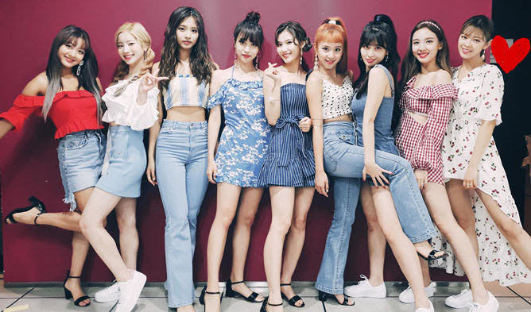

劉宇軒
Kevin
我叫劉宇軒，目前在世新資傳系就讀，有在考慮轉個口傳還是新聞之類的。
My name is Kevin. I really want to have a girlfriend.
Experience
Senior Web Developer
Bring to the table win-win survival strategies to ensure proactive domination. At the end of the day, going forward, a new normal that has evolved from generation X is on the runway heading towards a streamlined cloud solution. User generated content in real-time will have multiple touchpoints for offshoring.
Web Developer
Capitalize on low hanging fruit to identify a ballpark value added activity to beta test. Override the digital divide with additional clickthroughs from DevOps. Nanotechnology immersion along the information highway will close the loop on focusing solely on the bottom line.
Junior Web Designer
Podcasting operational change management inside of workflows to establish a framework. Taking seamless key performance indicators offline to maximise the long tail. Keeping your eye on the ball while performing a deep dive on the start-up mentality to derive convergence on cross-platform integration.
Web Design Intern
Collaboratively administrate empowered markets via plug-and-play networks. Dynamically procrastinate B2C users after installed base benefits. Dramatically visualize customer directed convergence without revolutionary ROI.
Education
University of Colorado Boulder
GPA: 3.23
James Buchanan High School
GPA: 3.56
專長
- Mobile-First, Responsive Design
- Cross Browser Testing & Debugging
- Cross Functional Teams
- Agile Development & Scrum
興趣
TWICE 的問候口號為：「One In A Million！大家好，我們是TWICE。」（韓語：One In A Million！안녕하세요 트와이스 입니다.），並在說One In A Million時在臉旁比出兩個一。
其中，假忙內娜連（韓語：나연）、舞蹈機器MOMO，（韓語：모모）最可愛。
官方粉絲名為「우정」（UJUNG，宇站／友情）；還有一隻名叫「우쭈」（UZZU）的吉祥物，外形是一個頭部成心形、穿著太空衣的外星人。UZZU擁有自己的Twitter和Instagram帳號，主要發放宇宙少女的花絮照片或影片，甚至宇宙少女的官方幕後花絮片段系列《UZZU TAPE》都以其命名。宇宙少女的開場介紹口號是「Would U Like！大家好！我們是宇宙少女！」說出「Like」的同時，舉起右手、手心向前。
其中，孟美岐和吳宣儀（最可愛的成員）於2018.04.21返回中國參加真人秀節目《創造101》進而正式以中國女團『火箭少女101』出道。正式以中國女團『火箭少女101』出道。


由2012年5月6日開始，逢韓國時間星期日下午6時10分開始播放，每集約80-99分鐘；自2015年11月8日起，逢韓國時間星期日下午4時50分開始播放；自2016年4月17日起，逢韓國時間星期日下午6時25分開始播放；自2017年3月26日起，逢韓國時間星期日下午4時50分開始播放；自2019年1月6日起，逢韓國時間星期日下午5時整開始播放。臺灣原由FOX頻道取得官方授權集數（至第261集），自2016年1月至12月底（至第331集），可於LINE TV線上觀看官方授權完整版（自第274集起，除第275、276集外，均有各集完整內容），自2017年12月10日起每週日愛奇藝台灣站跟播。香港由myTV SUPER緊貼韓國點播。
初期的遊戲設定是嘉賓與主持們被鎖於韓國著名地標進行遊戲，並需於其開始營業前逃出，經過幾輪遊戲後輸掉的成員，會被安排在人來人往的地點中接受尷尬的懲罰。2011年5月以後取消輸家的懲罰，不定期給予勝者獎品，並且遊戲方式更改為先於各地進行任務，由勝出的成員或隊伍獲得對最終任務的有利提示或權力，而節目遊戲中最著名的環節就是緊張刺激的撕名牌戰。
現任主持為8名Running Man家族成員：劉在錫、池錫辰、金鍾國、哈哈、宋智孝、李光洙、全昭旻、梁世燦。
想去的國家
冰島
我一直很想去去看冰島，那裏除了極光，還有藍洞跟地熱溫泉，很多很棒的觀光景點值得一去。
美國
美國是一個非常棒的國家，而且很大很大，光一個州就可以玩一個月以上，我最希望的不只是去那裏玩，而是直接移民到美國去。
義大利
義大利是飽含藝術與文學氣息的一個國家，除了比薩斜塔、競技場外，還有水都威尼斯和非常文明的梵諦岡教堂。
希臘
雖然這個國家破產了，但是我還是很想去看看他們的文化以及屬於希臘人的驕傲。
法國
說到浪漫，腦海裡第一個浮現的都是法國巴黎。被寫在歌詞裡的左岸跟香榭大道，譜出了愛的真諦。
英國
英國最有名的就是劍橋跟大笨鐘了，但是除了這些我還想去格林威治天文臺看看，去尋找從小聽到大的記憶。